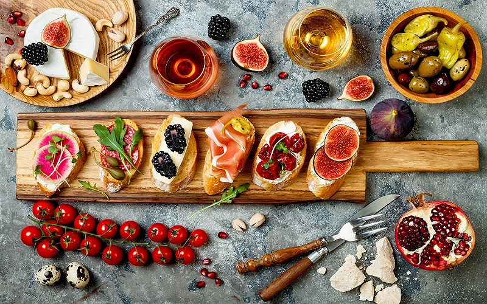

Endless Feasts
It might look like a boot, but food-obsessed Italy feels more like a decadently stuffed Christmas stocking. From delicate tagliatelle al ragù (pasta ribbons in a meat-based sauce) to velvety cannoli (crisp pastry shells filled with sweet ricotta), every bite can feel like a revelation. The secret: superlative ingredients and finely tuned know-how. And while Italy's culinary soul might prefer simplicity, it's equally ingenious and sophisticated. Expect some of the world's top fine-dining destinations, from San Pellegrino 'World's Best 50' hot spots to Michelin-starred musts. So whether you're on a degustation odyssey in Modena, truffle hunting in Piedmont or swilling powerhouse reds in the Valpolicella wine region, prepare to loosen that belt.
